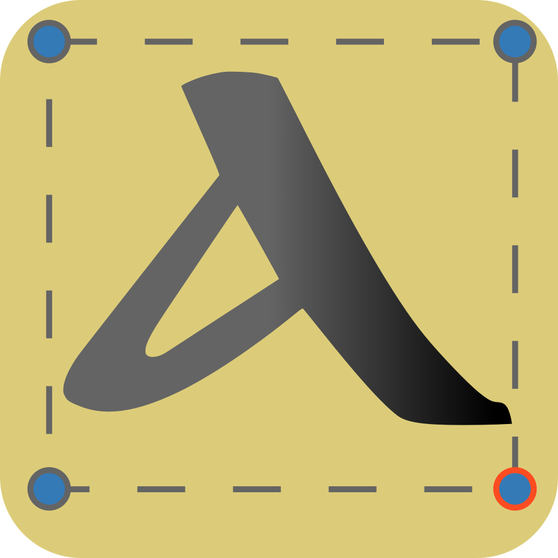

Loading...
Loading Overlapping Zones...
click_full_img
Add new bb

GlyFix
New Project
Open a Project
Download PAP
Download JSON
Show Labels
All
Focus View
Annotation View
Overlapping View
Focus View
Click on the image to focus on annotation.
Annotation View
Select a Category
Overlapping Annotations View
<< Prev Overlapping Zone
Next Overlapping Zone >>
×
Close
Are you sure you want to open a New Project?
All unsaved changes will be lost.